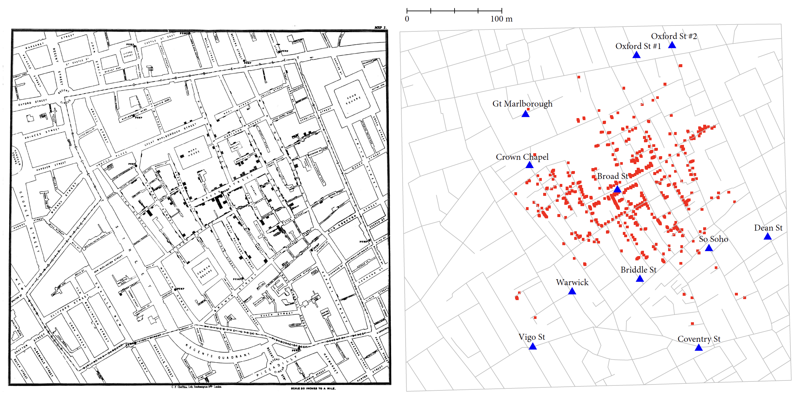
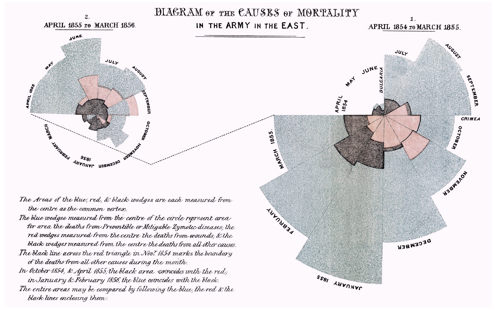
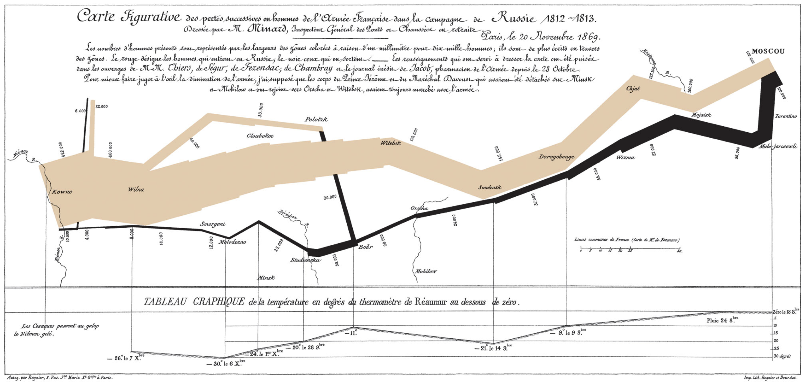
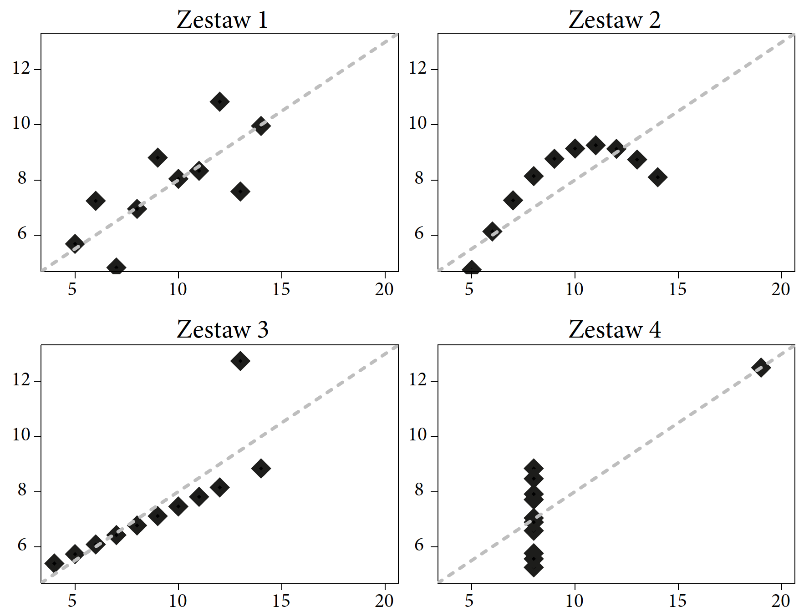
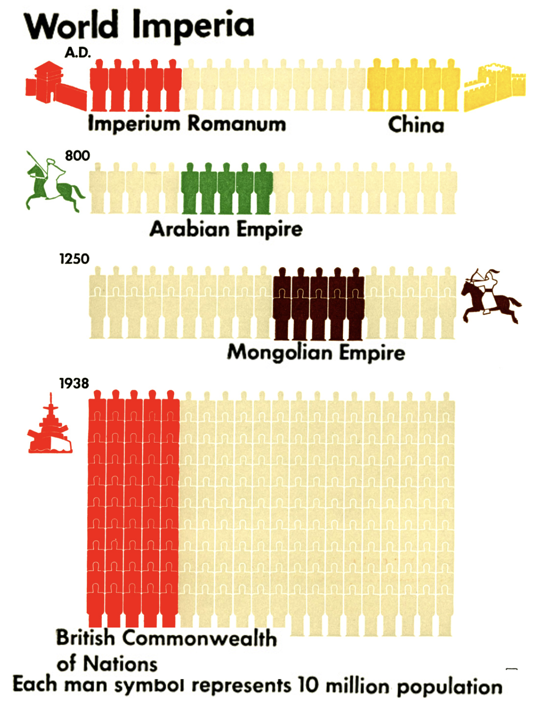
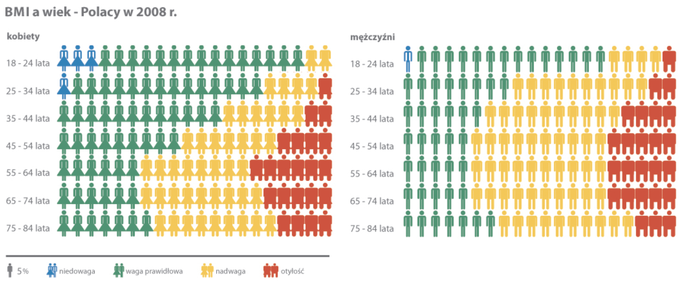

3 Rodzynki

W tym rozdziale przyjrzymy się pięciu przykładom wyjątkowych wizualizacji danych, które przeszły do historii, nierzadko zmieniając losy wielu osób. Większość tej książki poświęcona jest sprawdzonym przepisom sporządzania poprawnych i czytelnych wykresów, ale pamiętajmy, że wykresy to nie dzieła natury, ale są wymyślane i usprawniane przez pokolenia naukowców, chcących komunikować złożone zależności. Przedstawione tutaj wykresy to przykłady tych pionierskich innowacji, a za każdą z nich stoi interesujący badacz lub badaczka, którzy ją wymyślili. Oto pięć wykresów, które każdy szanujący się smakosz danych musi znać.
3.1 Wykres, narzędzie walki z pandemią
Wykresy mogą się przysłużyć zupełnie nowym odkryciom naukowym i społecznym. Ciekawym przykładem grafiki statystycznej towarzyszącej naukowej rewolucji jest wykres opracowany przez lekarza dr. Johna Snowa (1813–1858) dotyczący epidemii cholery w londyńskim Soho w 1854 roku. O istotnej wadze tego dzieła świadczy między innymi to, że dzięki wynikom pracy nad tą epidemią John Snow jest uznawany za prekursora epidemiologii.
Nakreślmy kontekst. Jest 1854 rok. Liczba mieszkańców londyńskiego Soho szybko rośnie. Nie ma kanalizacji. Nieczystości przechowywane są w szambach, mieszczących się w piwnicach. Niestety szamba nie są wystarczająco duże jak na potrzeby szybko rosnącej liczby mieszkańców i zbyt szybko się przepełniają. Władze Londynu nakazują je częściej opróżniać przez wylewanie zawartości do Tamizy. W Londynie wybucha epidemia cholery, która w ciągu pierwszych trzech dni zabija przeszło 120 osób, a łącznie ofiar jest ponad 600. Zaraza spowodowała taką panikę, że jedna trzecia mieszkańców Soho uciekła z miasta w obawie o swoje życie.
W tamtych czasach wierzono, że cholera jest rozprzestrzeniana przez ,,morowe powietrze’’. Przypomnijmy, że bakterie wywołujące choroby odkrył Louis Pasteur dopiero 7 lat później, zatem zarówno podczas tej epidemii, jak i wcześniejszych ludzie naprawdę nie mieli pojęcia, z czym mają do czynienia. Nasz bohater, John Snow, szukając przyczyny epidemii, rozmawiał z mieszkańcami opanowanej chorobą dzielnicy. Odkrył, że wszystkie przypadki zachorowań i śmierci są w jakiś sposób związane z pompą wody na Broad Street. Zgony dotyczyły głównie osób mieszkających w tej okolicy albo dzieci uczęszczających do szkoły w pobliżu, albo osób mieszkających dalej, ale pobierających wodę z tego ujęcia. Można przypuszczać, że zauważył to dzięki naniesieniu na mapę dzielnicy kropek symbolizujących zachorowanie danej osoby w miejscu jej zamieszkania/pracy/szkoły.
John Snow nie potrafił wytłumaczyć, co dokładnie tę chorobę wywołuje, ale zebrane dowody wystarczyły, by przekonać władze Londynu do zamknięcia wskazanego ujęcia wody. Jak przyznawał sam Snow, epidemia była już wtedy w fazie końcowej i nie sposób przypisać zakończenia epidemii wyłącznie tej decyzji. Z pewnością jednak ograniczyło to liczbę przypadków śmiertelnych i przyczyniło się do lepszego zrozumienia przyczyn epidemii. Później udało się ustalić, że roznosząca zarazki pompa wody była położona bardzo blisko jednego z szamb.

Mapa przedstawiona na rysunku Figure 3.1 stanowi piękny przykład tego, jak wizualizacja danych pozwala na dobitne przedstawienie związku pomiędzy różnymi czynnikami, w tym przypadku zgonami a ujęciem wody. W przypadku Snowa można przypuszczać, że to właśnie proces tworzenia pierwszej wersji mapy pomógł mu w odkryciu źródła epidemii (Snow 1849).
3.2 Wykres, uniwersalne narzędzie perswazji
Jak widzieliśmy na przykładzie epidemii cholery, grafika statystyczna jest bardzo przydatna przy dokonywaniu odkryć naukowych i badaniu zjawisk społecznych. Jak się za chwilę okaże, może być również użyta jako narzędzie do wywierania wpływu na opinię odbiorcy i w konsekwencji na jego dalsze decyzje. Najbardziej znanym przykładem grafiki statystycznej użytej w celu wywołania konkretnej reakcji, a wręcz wykorzystanej jako środek silnej perswazji, były wykresy angielskiej pielęgniarki i jednocześnie statystyczki Florence Nightingale (1820–1910).
W tej historii niemałą rolę odgrywa osobowość panny Nightingale, zacznijmy więc od jej krótkiego przedstawienia. Kobieta wywodząca się z tzw. dobrego domu (była arystokratką) przeraziła całą rodzinę, gdy oświadczyła, że chce zostać pielęgniarką. W tamtych czasach absolutnie nie było to zajęcie dla kobiet z wysokich czy choćby średnich warstw społecznych.
Nightingale nie była jednak osobą, która łatwo rezygnuje ze swoich planów. Nie dosyć, że została przełożoną pielęgniarek, to jeszcze w wieku 33 lat rozpoczęła organizowanie opieki szpitalnej podczas wojny krymskiej.
Pracowała bez wystarczających środków medycznych, zaopatrzeniowych czy żywieniowych. Robiła, co mogła, by pomóc rannym żołnierzom. Znana była z tego, że wykonywała systematycznie obchody po korytarzach szpitala, niosąc lampę, przez co przylgnęło do niej określenie the lady with the lamp. Czy robiła to, by żołnierze nie czuli się samotni i opuszczeni w nocy, sam na sam z bólem i cierpieniem? Jej postawa przerodziła się w symbol. Sto lat później nakręcono film pod tytułem The Lady with the Lamp, a nawiązania do niej pojawiają się w poezji Henry’ego Longfellowa i innych poetów. Dała się poznać jako bardzo zdeterminowana osoba. Jednocześnie należy podziwiać jej podejście do pracy, nie zajmowała się bowiem tylko doraźną pomocą, ale interesował ją całokształt problemu i zależało jej na stworzeniu dobrych systemowych rozwiązań, tak aby z jej doświadczeń mogli korzystać również inni.
W okresie służby na Krymie Nightingale odkryła, że większość żołnierzy ginie z powodu złej opieki szpitalnej: zakażeń, niedożywienia i innych przyczyn, którym można zaradzić, organizując lepszą opiekę. Oszacowała, że z 18 tysięcy zgonów około 16 tysięcy było spowodowanych zakażeniami, a więc niskim poziomem higieny i osłabieniem chorego spowodowanym brakiem żywności i niedostatecznym wyposażeniem szpitali polowych. To odkrycie niosło jednocześnie jasną przesłankę, co zrobić, by znacząco ograniczyć liczbę ofiar – należało lepiej zorganizować opiekę szpitalną. Dziś to oczywiste, ale w tamtych czasach było rewolucyjnym odkryciem.
Aby przedstawić swoje racje, Nightingale opracowała wykres polarny (nazywany też różą Nightingale, ang. Nightingale rose diagram), przedstawiony na rysunku Figure 3.2, przez samą autorkę określany wykresem grzebieniowym (ang. coxcomb).

Z opracowanego przez Nightingale wykresu łatwo odczytać jak wiele śmierci spowodowanych było uleczalnymi chorobami, czyli zakażeniami szpitalnymi, efektami niedożywienia lub słabej opieki szpitalnej. Przypadkom tym odpowiada kolor niebieski. Rozstawienie słupków powoduje, że kolor ten dominuje wykres. Liczby zgonów odpowiadają promieniom odpowiednich segmentów, jednak bardziej rzuca się w oczy ich powierzchnia – a ta jest proporcjonalna do kwadratu promienia. Jest to oczywiście manipulacja sposobem przedstawiania danych, tak by udział chorób uleczalnych wydawał się jeszcze większy niż w rzeczywistosci.
Wykres ten nie tylko pokazywał, co jest złego w systemie opieki szpitalnej na polu bitwy, ale połączony był z jasną sugestią autorki, że poprawa opieki szpitalnej doprowadzi do znacznego ograniczenia liczby ofiar wojennych. Dzięki prostej formie, dobitnie przestawiającej fakty, był dla wszystkich wystarczająco zrozumiały. Wykres spełnił swoją rolę bardzo dobrze, był edukacyjny i informacyjny (przedstawił nowe fakty), a dodatkowo był opiniotwórczy (dzięki wadze przedstawianych informacji), dlatego doprowadził do zmian po myśli Nightingale. Warunki w opiece szpitalnej znacznie się poprawiły. W tym przypadku bez żadnego nadużycia można stwierdzić, że to grafika statystyczna, czytelne i celowe przedstawienie danych, doprowadziła do uratowania tysięcy ludzkich istnień i do znaczących zmian w systemie opieki nad chorymi.
W roku 1907 Florence Nightingale, jako pierwsza kobieta w historii, otrzymała Brytyjski Order Zasługi.
3.3 Wykres, podsumowanie kampanii militarnych
%Wykresy Williama Playfaira są pięknymi przykładami wizualizacji danych o ekonomii państwa. Wykres Johna Snowa pokazuje, jak dzięki wizualizacji danych można odnaleźć wspólny mianownik dziesiątek zgonów. Wykresy Florence Nightingale prezentują moc perswazji dobrze zaprojektowanej grafiki. Przyjrzyjmy się teraz wykresowi, o którym Edward Tufte (którego jeszcze spotkamy na jednym z kolejnych przystanków wędrówki przez dzieje wizualizacji) napisał: ,,być może najlepsza grafika statystyczna, jaka kiedykolwiek powstała’’.
Zacznijmy od przedstawienia autora. Charles Minard (1781–1870) był francuskim inżynierem lądowym, a także pionierem, jeżeli chodzi o zastosowania grafiki w inżynierii i statystyce. W 1869 roku opublikował mapę przedstawiającą historię napoleońskiej inwazji na Rosję w latach 1812–13. Piękno tej grafiki bierze się z prostoty i elegancji zaprezentowania złożonych i wielowymiarowych danych.
Dziesiątki bitw i potyczek, ruchy olbrzymich mas wojsk, wyniki starć z wrogimi wojskami – to wszystko można odczytać z jednej mapy. Liczebność armii na poszczególnych etapach inwazji przedstawiono za pomocą grubości odcinków łączących poszczególne istotne punkty kampanii. Na linii Kowna armia napoleońska liczyła 420 tysięcy żołnierzy. Po drodze do Moskwy od głównej armii oddzieliły się dwie mniejsze dywizje, a dalej na wschód doszło do szeregu bitew, w wyniku których wielkość armii topniała, co pokazuje zwężająca się szerokość brązowej wstęgi. Do Moskwy dotarło jedynie około 100 tysięcy żołnierzy. Byli to jednak żołnierze bez wystarczającego zaopatrzenia, ponieważ wycofująca się armia rosyjska nie pozostawiła żadnych zapasów żywności.

Odwrót rozpoczął się 18 października z powodu braku żywności i zbliżającej się zimy. Na wykresie odwrót zaznaczony jest czarną wstęgą, której jednocześnie towarzyszy prezentacja spadającej temperatury (w dolnej części grafiki). Żołnierzom nie udało się uciec przed zimą i zimnem, podczas odwrotu temperatura spadła do \(-30\) stopni. Temperatura, brak żywności, potyczki z wrogiem spowodowały, że w drodze powrotnej do Kowna armia stopniała do 30 tysięcy żołnierzy. Był to niewielki ułamek początkowej armii.
Zaznaczając położenie wojsk, uwzględniono nie tylko położenie geograficzne, ale również daty osiągnięcia przez armię danej pozycji. Umożliwia to śledzenie w czasie przemieszczania się cesarskiego wojska, jak i przebiegu bitew (zwężająca się wstęga oznacza coraz to mniejszą liczbę żołnierzy po kolejnych krwawych potyczkach). Zaznaczona spadająca temperatura podczas odwrotu (a inwazja miała miejsce podczas ponoć jednej z najsroższych zim w historii) ułatwia zrozumienie, z jakimi innymi przeszkodami musieli się zmierzyć żołnierze, w dużej części pochodzący z południa Europy.
Mapa Minarda podważa twierdzenie, że każda dobra wizualizacja musi być prosta i natychmiast czytelna. Jest przykładem, że bogata w różnorodne informacje grafika wcale nie musi być tablicą rozdzielczą (ang. dashboard) złożoną z wielu prostych wykresów.
Dzieło Minarda wcale nie jest prostą grafiką. Zawiera wiele szczegółów, które można stopniowo odkrywać, część z nich dostrzega się dopiero po pewnym czasie. Wszystkie te detale składają się w jeden bogaty obraz kampanii napoleońskiej. Czy tym właśnie jest idealna grafika statystyczna? Czy chodzi o zaprezentowanie całej złożoności opisywanego zjawiska, wszystkiego, co jest w nim ważne, w formie jednego wielowarstwowego obrazu? Z pewnością jest to świetny przykład czytelnej, estetycznej i bogatej w informacje wizualizacji.
3.4 Wykres pokaże to lepiej
Jednym z najbardziej znanych wykresów statystycznych jest przedstawiony poniżej kwartet Anscombe’a. Frank Anscombe zapisał się w historii grafiki statystycznej, kiedy w 1973 roku skonstruował i przedstawił cztery zbiory danych o bardzo ciekawych właściwościach. Każdy zbiór danych składa się z dwóch zmiennych: x i y. W każdym zbiorze danych średnia wartość zmiennej x wynosi 9. Wariancja tej zmiennej w każdym zestawie danych wynosi 11. Średnie zmiennej pokazanej na osi pionowej w każdym z zestawów danych wynoszą 7,5, a ich wariancje są równe 4,12. Dla każdego z tych czterech zbiorów danych korelacje zmiennych na obu osiach wynoszą 0,816, a z punktu widzenia liniowych zależności wszystkie te dane najlepiej opisuje ten sam model regresji liniowej \(y=3+x/2\).
Można odnieść wrażenie, że to są bardzo podobne zbiory danych, skoro mają tak bardzo podobny opis. Ale dopiero narysowanie danych pokazuje nam, że w każdym zbiorze danych kryje się zupełnie inna historia.

ggplot2Od ponad 50 lat badacze są zachłyśnięci zależnościami, które łatwo przedstawić prostym wzorem, np. z użyciem regresji liniowej. Anscombe przygotował cztery zestawy danych tak dobrane, by podstawowe statystyki liczbowe były dla nich identyczne (Anscombe 1973). W każdym z tych czterech zbiorów danych mamy te same średnie, wariancje, współczynniki korelacji, regresji liniowej i wartości testów istotności dla współczynników w modelach regresji liniowej. Z punktu widzenia regresji liniowej te cztery zbiory danych są nierozróżnialne i w każdym z tych czterech przypadków mamy do czynienia z taką samą zależnością pomiędzy parą zmiennych.
Jednak proste przedstawienie graficzne tych czterech zestawów danych ilustruje oczywiste różnice pomiędzy nimi. Jest to wspaniały przykład wartości wizualizacji danych, która czasem potrafi opowiedzieć o danych więcej niż nawet zaawansowany model statystyczny.
3.5 Wykresy mające edukować społeczeństwo
Obok umiejętności czytania, pisania i liczenia potrzebna jest edukacja związana z wnioskowaniem statystycznym. Umożliwi to społeczeństwu lepsze zrozumienie otaczającego nas świata i zmian, jakie w tym świecie zachodzą.

Jak się jednak okazuje, nie jest to wcale taki nowy trend. Już sto lat temu socjolog Otto Neurath twierdził, że grafika statystyczna powinna pełnić rolę edukacyjną dla społeczeństwa. Aby to stało się możliwe, musi być zrozumiała i interesująca, łatwa do zapamiętania i precyzyjna. W tym celu Neurath w latach trzydziestych XX wieku opracował język ISOTYPE, zaprojektowany do łatwego zrozumienia wykresów, tak by na ich podstawie możliwa była ,,edukacja wizualna’’ społeczeństwa.

Język ISOTYPE to zestaw symboli i reguł, wskazówek, jak prezentować graficznie informacje w sposób zrozumiały dla szerokiego odbiorcy. Zawiera listy precyzyjnie zaprojektowanych znaków/piktogramów o uniwersalnych znaczeniach oraz reguły czytelnego i dokładnego używania tych piktogramów w celu prezentowania informacji. Jedną z najbardziej charakterystycznych reguł jest zasada używania powtórzeń znaku do przedstawiania wielkości. Porównując dwie wartości, z których jedna jest o 50% większa od drugiej, na wykresie paskowym użylibyśmy dwóch pasków, z których jeden byłby o 50% dłuższy niż drugi. W pewnych sytuacjach wykorzystanie liczby powtórzeń piktogramu zamiast długości pozwala na czytelniejsze i ciekawsze zaprezentowanie określonej wartości.
Ten ,,język wizualny’’ został tak skonstruowany, by ułatwić zrozumienie danych liczbowych opisujących współczesny świat. Jedno z większych dzieł stworzonych z użyciem tego języka to Modern man in the making (1939) (Neurath 1940), autorstwa Otto Neuratha. Książka ta przedstawia zbiór ciekawych statystyk dotyczących społeczeństwa, pokazujących, jak wyglądał ówczesny świat. Dzisiaj dzieła Ottona Neuratha są dostępne w domenie publicznej. Rysunek Figure 3.5 pochodzi z tej drugiej i przedstawia wielkość różnych imperiów na przestrzeni dziejów.
Więcej o języku ISOTYPE można przeczytać w artykule Młodzi XXL, Eurostat a problem nadwagi i otyłości przygotowanym przez Magdę Małczyńską-Umeda.
3.6 Zadania
Chciałbyś poznać więcej epickich wykresów tworzących historie wizualizacji danych? Wystarczy wykonać poniższe zadania.
- Jednym z ojców graficznej wizualizacji danych był William Playfair. Wynalazł on wiele pomysłowych sposobów prezentacji danych. Dzieło Playfaira zawierające te wykresy było prawdziwym bestsellerem w jego czasach. Zapoznaj się z listą różnych wykresów przedstawionych na jego stronie w Wikipedii. Który z tych wykresów uznasz za najbardziej ciekawy/przełomowy?
- Jednym z najciekawszych wykresów wszech czasów jest wykres pudełkowy zaproponowany przez Johna Tukeya. W artykule 40 years of boxplots znajduje się ciekawe omówienie różnych modyfikacji tego wykresu. Która z nich jest Twoim zdaniem najbardziej informatywna?
- Bardzo oryginalnym i pomysłowym sposobem prezentacji danych jest wykres łodyga-liście. Możesz o nim przeczytać więcej na odpowiedniej stronie w Wikipedii. Czy potrafisz powiedzieć, gdzie najczęściej jest on dzisiaj stosowany?
Jeżeli chciałbyś dowiedzieć się więcej o tych i innych wykresach, które odegrały znaczącą rolę, to może zainteresować Cię esej Perełki z historii z książki Odkrywać! Ujawniać! Objaśniać!